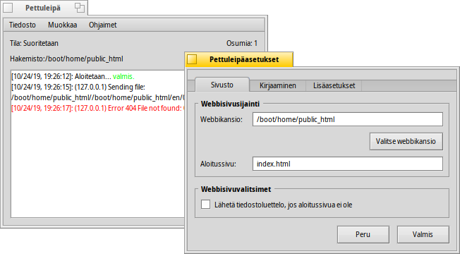

Pettuleipä
Pettuleipä
| Työpöytäpalkki: | ||
| Sijainti: | /boot/system/apps/PoorMan | |
| Asetukset: | ~/config/settings/PoorMan Settings |
Pettuleipä on näppärä pieni webbipalvelin, joka on äärimmäisen helppoa konfiguroida. Luonnollisesti se ei tarjoa mitään edistyneitä ominaisuuksia, kuten raskasta kuormaa palvelevat palvelinohjelmistot, se on vain köyhän miehen webbipalvelin.
Ensimmäisen käynnistyksen yhteydessä Pettuleipä-palvelin kysyy kansiota, josta palvellaan webbiä. Jos etenet painikkeella , uusi kansio /boot/home/public_html luodaan sinulle. Aloitussivuna HTML-tiedosto nimetään oletuksena siten, että index.html-tiedoston on oltava siellä.
Pettuleipä esittlee itsensä yksinkertaisessa pääteikkunassa, joka lokikirjaa sen aktiviteetin. Sitten siellä on tilatietoa siitä, onko palvelin käynnissä, mitä kansiota palvellaan ja osumalaskuri. Asetuksia vaihdetaan valikossa :

Asetuspaneeli jaetaan kolmeen välilehteen:
Valikossa voit valita toisen kansion palvelemisen, kirjoittaa toisen aloitussivun ja siellä on valitsin tiedostoluettelon lähettämiseksi, jos aloitussivua ei ole.
Valikko sallii sinun sulkea/avata lokikirjauksen pääteikkunaan tai vaihtoehtoisesti erilliseen lokitiedostoon.
Välilehti sisältää asetuksen samanaikaisten yhteyksien enimmäismäärästä.
Pääteikkunan valikkorivit ovat itsestäänselviä. Niillä voit esimerkiksi tallentaa pääteikkunan (osa)tulosteita, tyhjentää pääteikkunan tai käynnistää/sammuttaa palvelimen ja nollata osumalaskurin.